Faithful to the rules
Every gameplay feature is traced to the original game's code: jump heights, lift speeds, crate pushing, the enemies' patrols. If Speedy Blupi didn't do it, Galaxy Eggbert doesn't either.
Free · Open source · Made by fans, for fans
New Version 0.5.0 is out: twenty-one new cheats, a cheat keyboard and your own demo recordings
Speedy Blupi, reborn in true 3D. Run, jump, swim and fly through 78 voxel worlds. Ride the helicopter, push the crates and dodge the mines, all by the original game's rules. Then call your friends and play Speedy Blupi II's network game together.
Version 0.5.0 for Windows, Linux, Android and the web · macOS and iPhone on the way
For every Speedy Blupi fan
In 1998 a yellow egg with big eyes ran, jumped and flew through Speedy Blupi (Speedy Eggbert in English), the 2D platformer by Daniel Roux and EPSITEC. Fans have played it ever since. Galaxy Eggbert rebuilds it as a real 3D game: the rules, the objects and the timing are the original's, and now the worlds have depth.
Every gameplay feature is traced to the original game's code: jump heights, lift speeds, crate pushing, the enemies' patrols. If Speedy Blupi didn't do it, Galaxy Eggbert doesn't either.
No side-scroller on a rail. Every world is designed in 3D: you walk freely across real heights, caves, towers and bridges, and the camera follows behind Blupi or looks through his eyes.
The 1998 sprites were rendered from 3D scenes. Galaxy Eggbert converts those same scenes into models, so the Blupi, gadgets and decor you see in 3D come from the original artwork.
What's inside
A complete game, playable from the first lesson to the final red arrow, plus tools to build your own.
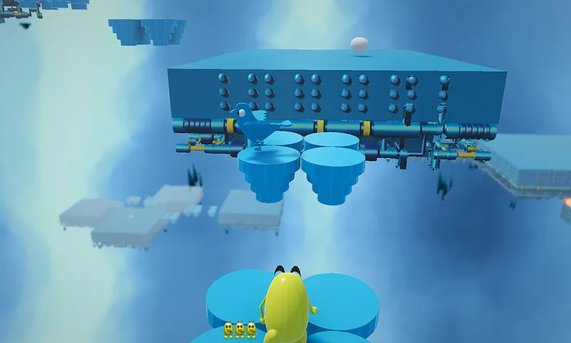
Explore
The 2D maps of the original set each world's theme, mechanics and difficulty. The worlds themselves are new 3D designs, built one voxel at a time. There are no flattened tracks or extruded 2D layouts.
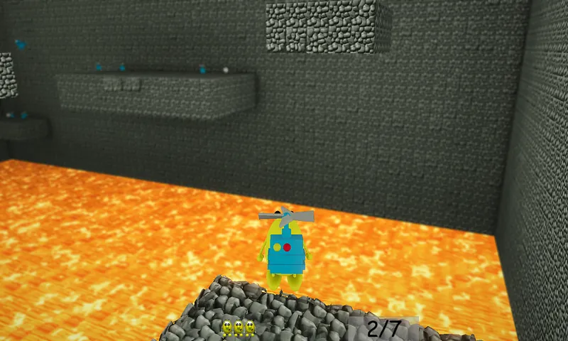
Ride & use
The helicopter that drops glue, the jeep, the tank, the hovercraft and the skateboard. Dynamite to blast walls, drinks that make Blupi hide, lollipops, keys and teleporters. They all came over from the original, with the original's timing.
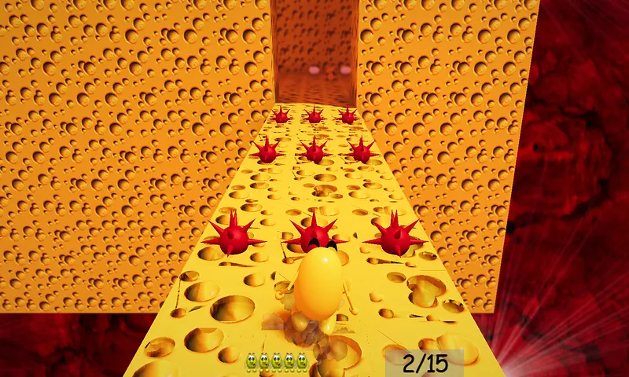
Survive
Mines sit still, patrol or hang from the ceiling. Birds, fish, wasps and bulldozers keep to their routes, and creatures and enemy Blupis come after you. Saws spin, fans blow, crushers stamp, lightning strikes and lava glows. Timing is everything.
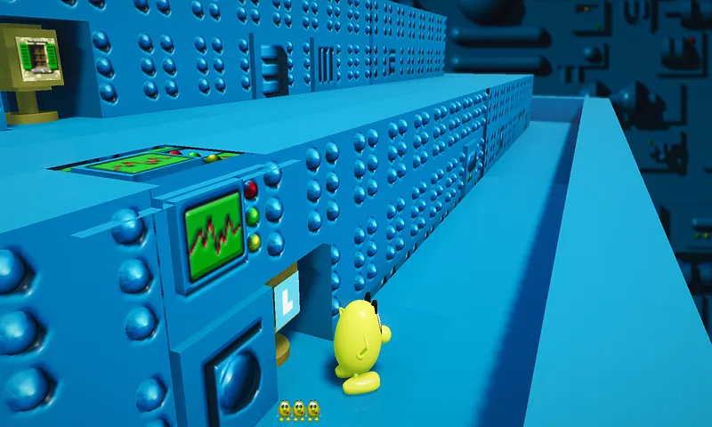
Progress
Start in the main hub and pick any of the twelve worlds. In each world's hub the next mission's bar slides up when you win the one before. Collect every treasure, grab the eggs for extra lives, and finish each world with the golden key.
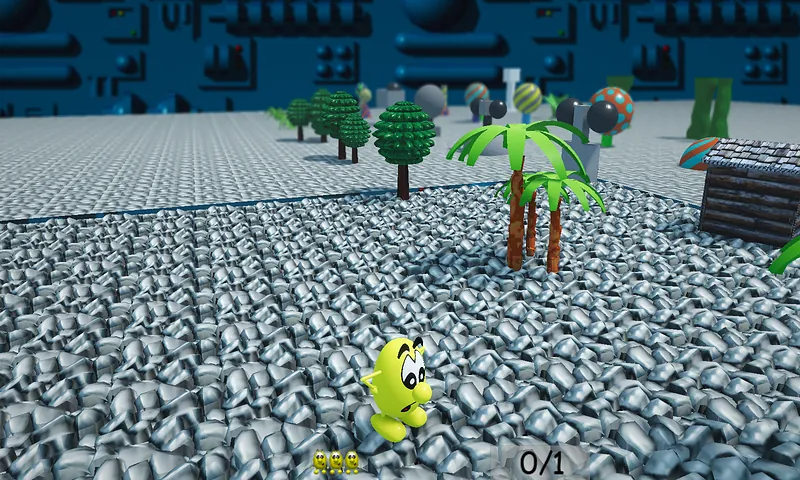
Look
The 1998 sprites were rendered from 3D scenes. Galaxy Eggbert converts those scenes into animated models, so you get Blupi himself, with an animation for every action: running, climbing, cheering, wobbling at an edge. The treasure chests, enemies, palms, houses and machines are converted the same way. Rocks, cheese, slime, pipes and palace walls get relief from the original scenes too.
Shine
Off keeps the clean classic look and runs on modest hardware. Each step up adds more: fog and particles on Low, water and lava shaders on Medium, real sun shadows and lights from explosions on High. Ultra adds HDR lighting, reflections, global illumination, volumetric fog and depth of field.
Drag the slider to compare: the same game tick of World 5, rendered Off and Ultra. The effects only change the picture, and the game plays exactly the same at every level.
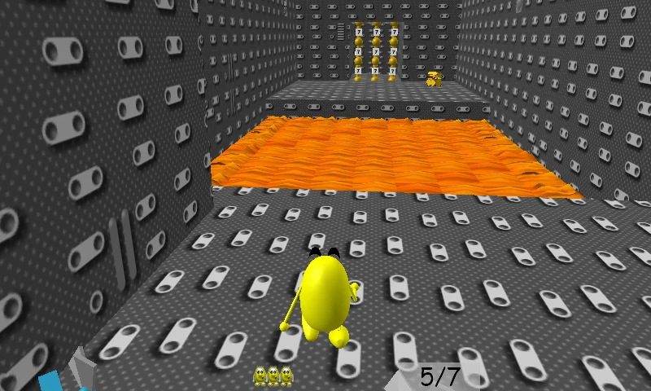
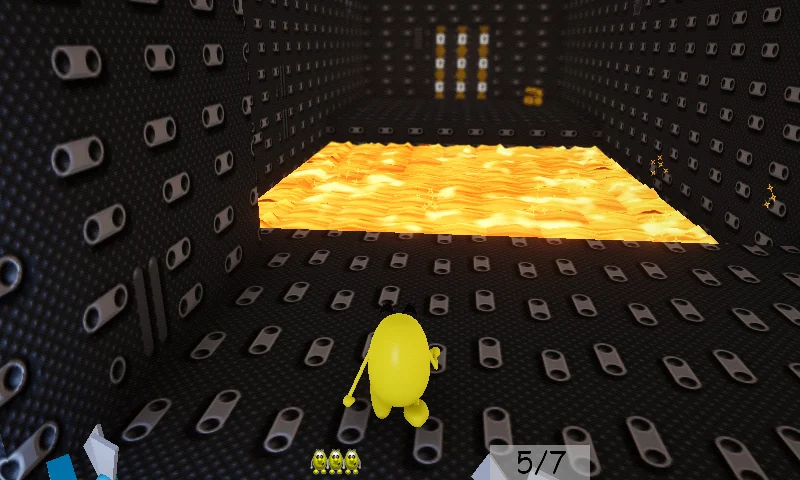
Keyboard, mouse, gamepad or touch screen. On phones the on-screen pad takes several fingers at once, and on Android you can steer by tilting the device.
Leave the main menu alone and Blupi starts playing ten demo runs. Record your own run of any mission from the pause menu, keep it in My recordings, then export it and share it as a file.
Type the old cheat words, or open the cheat menu with F12.
xnjttjpo still opens the editor on the world you're playing. Galaxy adds its own:
back rewinds five seconds, replay shows the last ten again,
freecam flies the camera, warp goes to any world, xray shows
what is hidden; type help for all of them. On a phone or a gamepad, hold the middle of
the screen or LT for a second for a cheat keyboard. Type fairplay to lock
cheats for an honest run.
Three player profiles, progress per profile and a resume file, so you can quit mid-mission. On the web, progress lives in your browser's storage and survives a reload.
Normal, fast or slow game speed. Frame rates above 60 are smoothed between game ticks. The help screen (F1) explains every control.
The music of the 1998 game and the sound effects from Speedy Blupi that fans know by heart, Blupi's ouf! included.
Twelve lands to conquer
Each world has its own look, its own tricks and a hub that opens one mission at a time. Every world is open from the start, so go where you like.
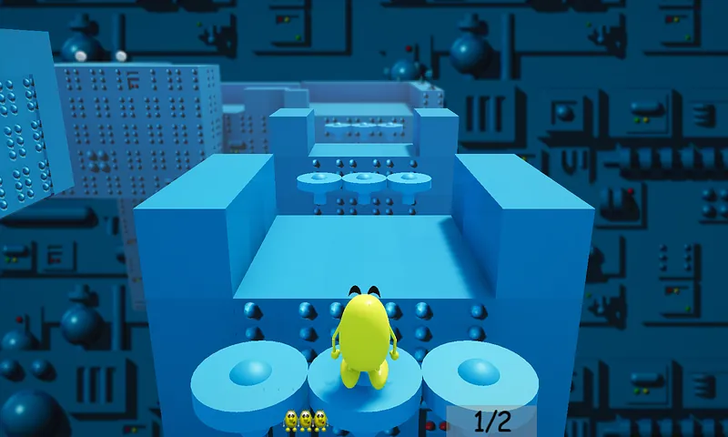
Riveted panels, elevators and the first lessons. Learn to jump, ride and keep out of the water.
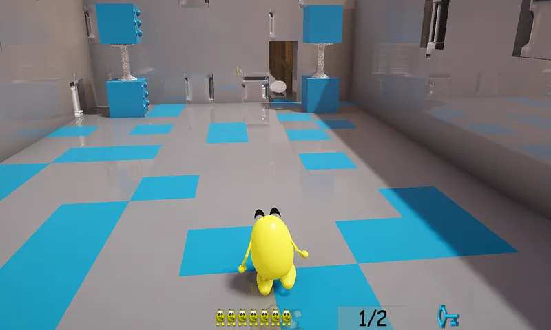
Polished white halls, tiled floors and columns, with keys that open the doors deeper inside.
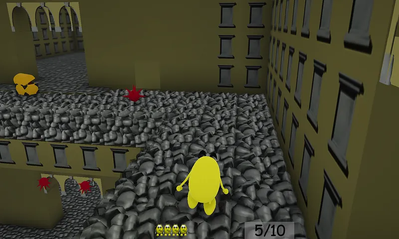
A street of slate roofs, windows and red doors between grassy hills and conifers.
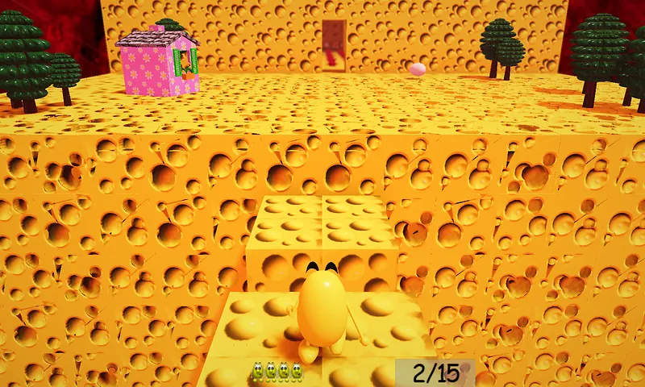
Tunnels and holes through a giant block of Swiss cheese, under a canopy of leaves.
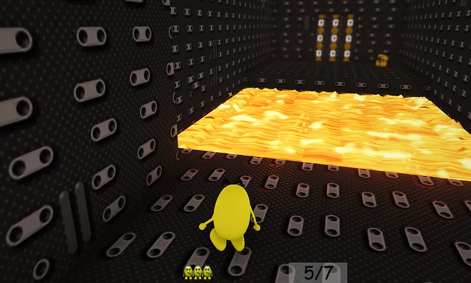
Dark perforated decks, lightning gates and lava pits aboard a station in space. The longest world.
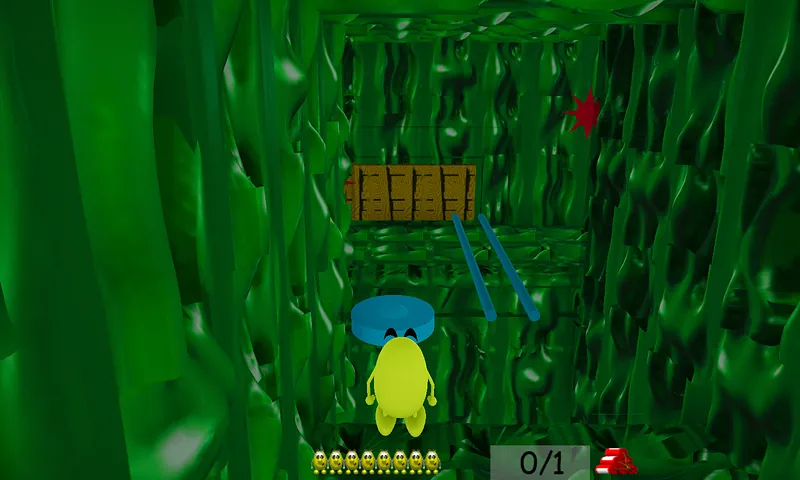
Shelves, vaults and columns of green slime deep inside a glowing cave.
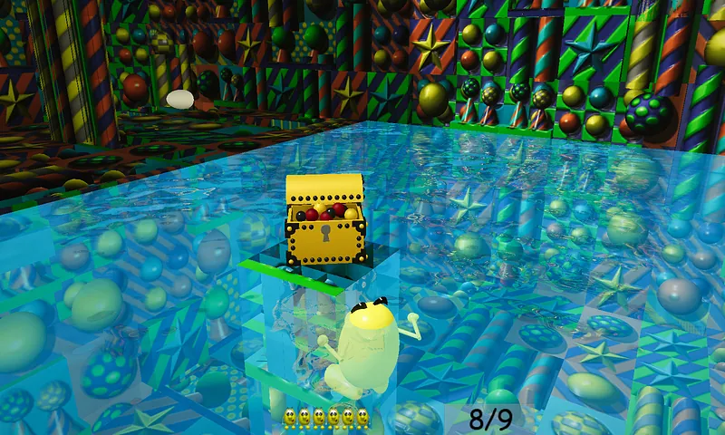
Balls, marbles, toadstools and candy poles stacked into a giant playroom.
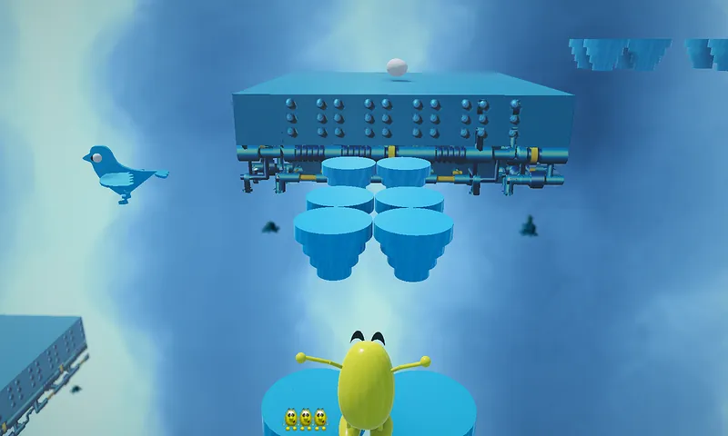
Cyan machines and pipe runs floating in the sky, with saucers that vanish under your feet.
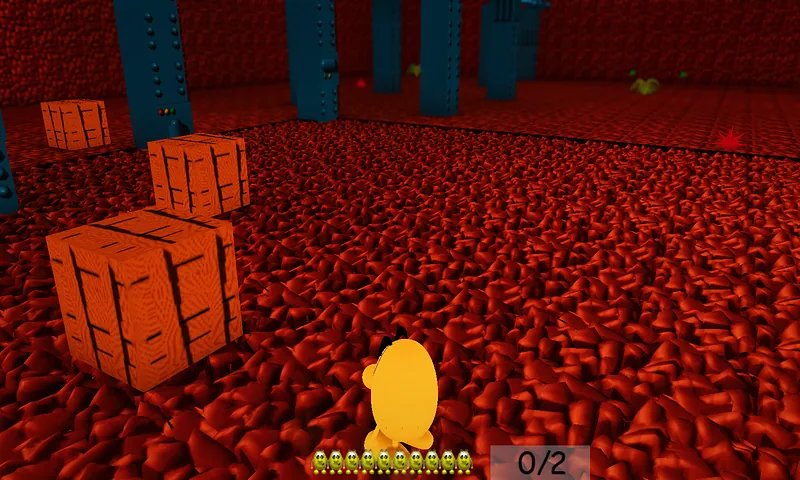
A sponge of clay clods with the red cave showing through, leading ever deeper.
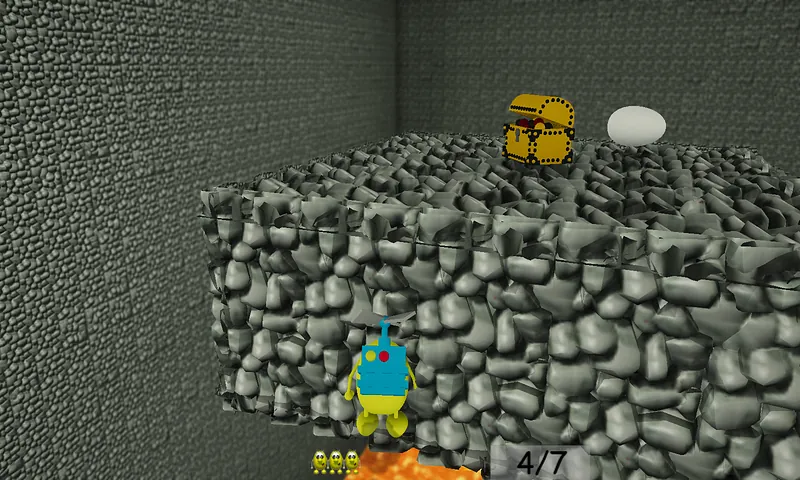
Heaps of grey cobbled stone on slender posts under a dark sky.
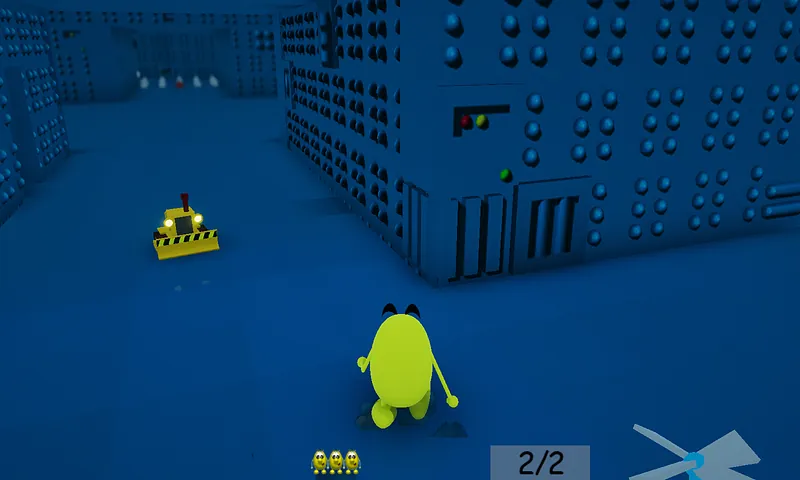
A pit cut deep into the machine, its walls stepping out as you climb.
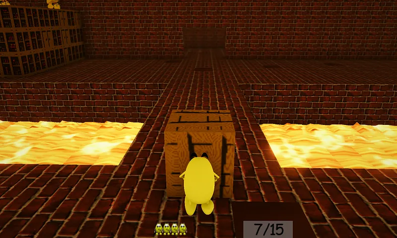
A tower of worn brick, floor by floor, up to the last of the twelve golden keys.
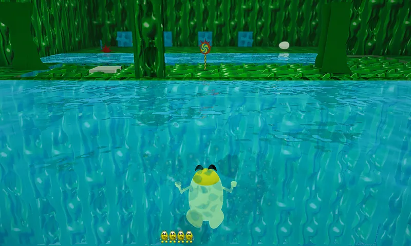
And then…
Win all twelve worlds and the gold bars at the top of the main hub open the way to a final journey. It takes strong inspiration from the original's last world and draws on every land you've crossed. Reach its red arrow to see the end.
Gallery
Captured from the current build at 1600×960 with Ultra graphics. Click any picture to enlarge it.
Build, play, share
Galaxy Eggbert ships with a complete 3D world editor. Build a level, play it at once, then link your worlds into a whole galaxy of your own.
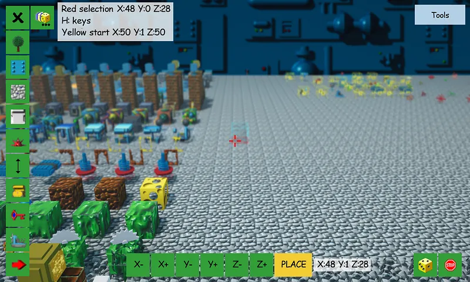
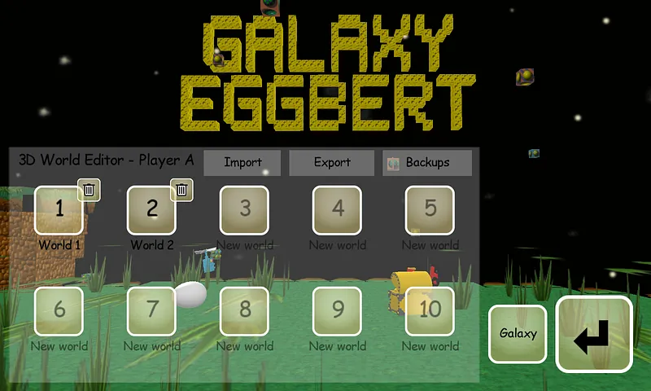
3D World Editor
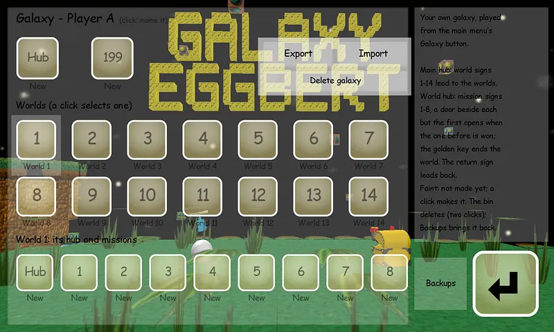
Your own galaxy
Every player has a galaxy of their own: a main hub, up to 14 world hubs with 8 missions each, and a bonus world. It follows the campaign's hub rules and keeps its own progress. Give it a name, then export the whole galaxy as one file for friends to import, on the desktop or on the web.
Recorded demos travel too. A run you recorded in someone's galaxy finds its world on any player's machine.
Two to four players
Two to four Blupis in one world. Galaxy Eggbert brings back the network game of Speedy Blupi II, with its rules, its arenas and its bombs, now in 3D.
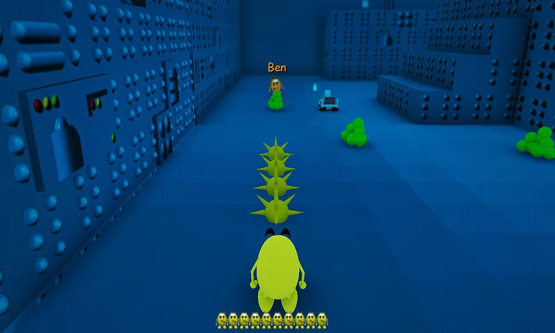
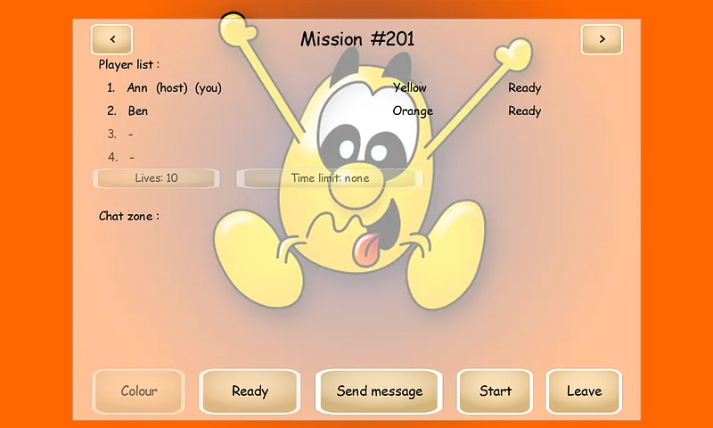
Multiplayer
Every player starts with ten lives at the start of their colour: yellow, orange, blue or green. Each team has its own bombs. Pick one up, lay it where the others will run, and stay clear of theirs, because another team's bomb kills at a touch. Tank and helicopter shots hit the other players too. Whoever is still in the game at the end wins.
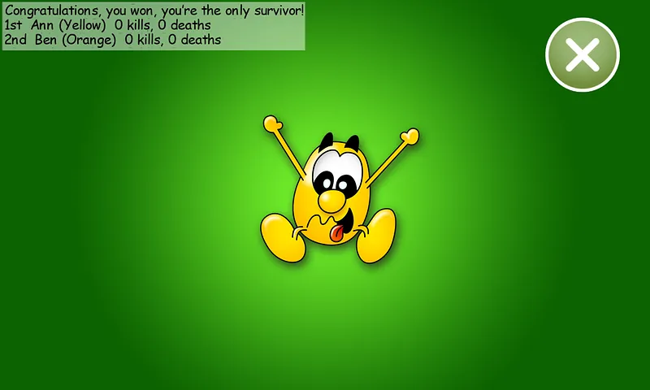
Arenas
The host picks the arena: the twelve network worlds of Speedy Blupi II (#201–#212), five new ones made for Galaxy Eggbert (#213–#217), or any world from their own 3D editor, which the game sends to the other players.
How to set it up, step by step: the multiplayer guide.
No install needed
The full game, compiled to WebAssembly with WebGL 2. That means the whole campaign, the editor, the demos and saved progress, all in a browser tab.
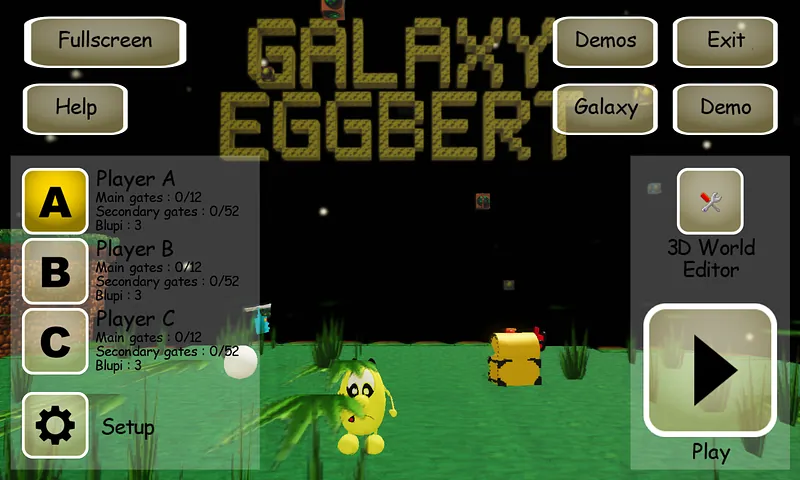
Get the game
Galaxy Eggbert is free and always will be. Version 0.5.0, released on 14 November 2026, is ready for Windows, Linux, Android and the web. Pick your platform below, or see everything on GitHub Releases (with the checksums).
Play instantly in a modern browser. WebAssembly + WebGL 2, nothing to install.
A portable x86-64 bundle: extract it and run ./run-galaxy-eggbert. It needs glibc 2.38 or newer
(Debian 13, Ubuntu 24.04 and later).
64-bit Windows: extract the zip and start GalaxyEggbert.exe. It needs OpenGL 3.3.
This first Windows build has mostly been tested under Wine, so please report anything odd.
An APK for arm64 phones and tablets with Android 7.0 or newer, with touch and tilt controls. Allow installing from your browser or file manager when Android asks.
Galaxy Eggbert is built on SDL3, which runs on Macs too. A native Mac build is on the roadmap. Until then the web version works in any modern Mac browser.
A native iOS app is planned. You can already try the web version in Safari, which has touch controls. It's experimental, and a recent device helps.
You need CMake, a C++ compiler and the sibling checkouts of CNA and cna-engine next to the game:
git clone https://github.com/openeggbert/galaxy-eggbert.git
cd galaxy-eggbert
cmake -S . -B build -DGALAXY_EGGBERT_BUILD_CNA=ON -DCNA_GRAPHICS_RENDERER=OPENGL33
cmake --build build --target GalaxyEggbertCNA -j8
cd build && ./GalaxyEggbertTo get a relocatable bundle, build the package target (Release). It produces GalaxyEggbert-<version>-linux-x86_64.tar.gz with a run-galaxy-eggbert launcher.
The web build is a set of static files: GalaxyEggbert.html, .js, .wasm, .data
and the Content/music folder. Download them as one zip
and serve them over HTTP(S) from any web server. Opening the file from disk won't work.
To build it yourself, use Emscripten:
emcmake cmake -S . -B build-cna-webgl2 -DGALAXY_EGGBERT_BUILD_CNA=ON \
-DCNA_GRAPHICS_RENDERER=WEBGL2 -DCMAKE_BUILD_TYPE=Release -DBUILD_TESTING=OFF
cmake --build build-cna-webgl2 --target GalaxyEggbertCNA -j8How to play
Collect every treasure in a mission, then reach the red arrow. Eggs give you extra lives. Press F1 in the game for this list at any time.
Under the hood
Galaxy Eggbert is modern C++ on CNA, an open reimplementation of Microsoft XNA 4.0, the framework the 2013 mobile Speedy Blupi was written in. A single code base runs on desktop OpenGL, OpenGL ES on Android and WebGL 2 in the browser.
Worlds are stored in a compact voxel format of 100×100×100 blocks in 10³ chunks. Every block keeps the original's tile number, so the art and the rules stay linked.
A QA autoplay plays every mission, every world as one chain and the whole campaign from a new game, then checks the result after each change.
Reference images guard the renderer. The 3D effects are presentation only: with them on, the game's simulation trace stays bit-for-bit identical.
Mechanics, objects and timings are logged against the original's source. Every intentional 3D adaptation is written down and explained.
SDL3 for windows, input and audio. OpenGL 3.3 on desktop, OpenGL ES 3 on Android, and Emscripten with WebGL 2 on the web.
All of it is on GitHub under the GPL-3.0: the game, the world generators, the asset converters and the test tools. Read it, learn from it, improve it.
Where we're heading
Questions
Yes. It's free to play and open source under the GNU GPL 3.0. There are no ads, no purchases and no accounts.
No. Everything the game needs comes with it, and the web version runs straight from this site.
Same hero, same rules, same gadgets and enemies, and the same campaign structure and themes. The levels themselves are new 3D designs based on each original world's identity, mechanics and difficulty. The 2D maps couldn't simply be converted.
No. Galaxy Eggbert is an independent fan project of the OpenEggbert community. Speedy Blupi and Blupi were created by Daniel Roux and EPSITEC SA, and the rights to the original game belong to them.
Twenty: English, French, German, Czech, Slovak, Spanish, Italian, Polish, Brazilian Portuguese, Dutch, Hungarian, Romanian, Swedish, Russian, Ukrainian, Finnish, Danish, Norwegian, Turkish and Greek.
The game starts in your system's language. Click the flag in the main menu to open the panel of flags and choose a language, or use Language in Setup. Your choice is remembered.
On Linux in ~/.local/share/Galaxy Eggbert and on Windows in %LOCALAPPDATA%\Galaxy Eggbert.
That folder holds your progress, recorded demos and your own worlds. In the browser everything is kept in the site's storage
(IndexedDB), so clearing this site's data also deletes your progress.
Use a current desktop browser with hardware acceleration turned on (the game is tested in Chrome), and keep the graphics level at Off or Low in Setup. The first start downloads about 100 MB, so give it a moment. If the screen stays black, check that WebGL 2 is enabled.
Yes. Gamepads that SDL3 recognises work in the game, in the menus and in the editor. The controls section lists the buttons.
Yes. Two to four players can play Speedy Blupi II's network game together on Windows, Linux and Android, all in the same match. Join the same local network (or a virtual one such as ZeroTier for play over the internet), choose Multiplayer in the main menu, and one player hosts while the others join. Version 0.5.0 plays with 0.4.1, 0.4.0 and 0.3.0, but not with 0.2.0 or 0.1.x. The web version can't play online. The multiplayer guide explains every step.
Yes. Export a single world, or your whole galaxy, as one file and send it to a friend. They import it from the galaxy screen, on the desktop or on the web. Recorded demos can be exported and imported the same way.
Play it, and report what feels wrong, especially where it plays differently from the Speedy Blupi you remember. Share your galaxies and demos, or send a pull request.
Part of OpenEggbert
Galaxy Eggbert is one of several OpenEggbert projects that keep Blupi's games alive and playable.
Seventy-eight worlds are waiting. Start in your browser in a few seconds, no install and no account.